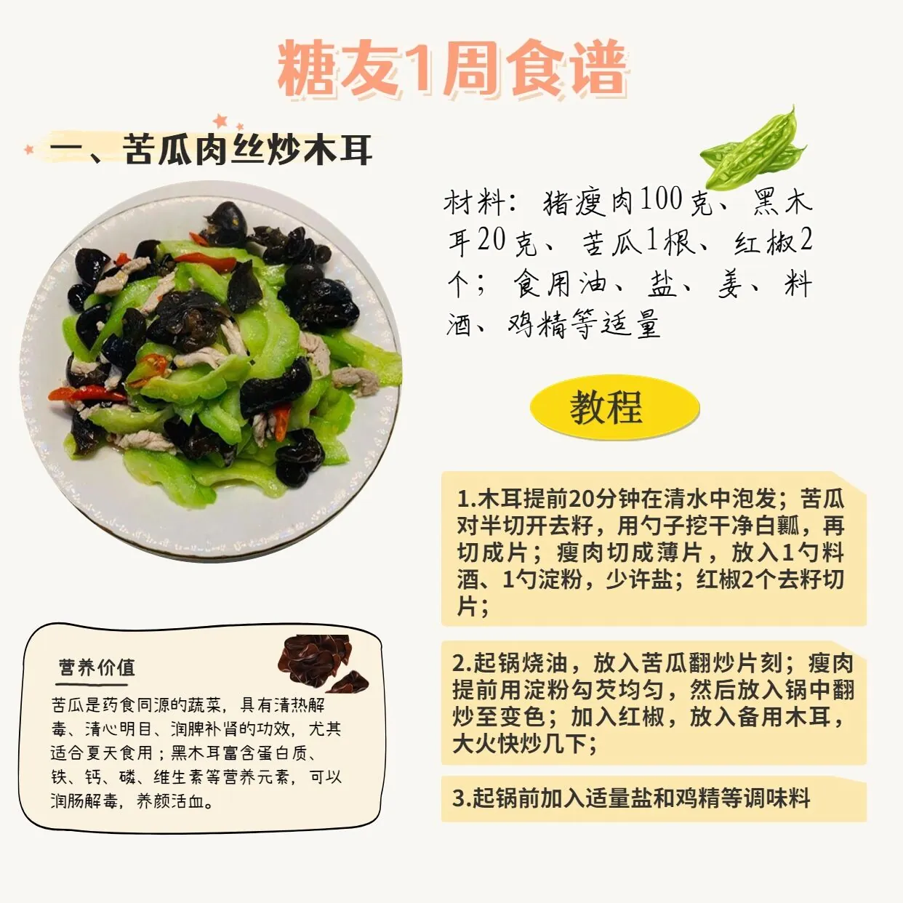

一日糖友用餐指南
早餐：燕麦蔬菜鸡蛋杯
午餐：藜麦鸡胸沙拉
晚餐：清蒸鲈鱼配杂粮饭
LiftFit
您的专属云营养师LifeFit已上线!
小智
地区
口味
偏甜
偏咸
偏酸
偏辣
偏淡
忌口
一天的餐标
点此进入个人信息填写->进入智膳通
一周糖友菜谱推荐

新鲜蔬菜推荐
菠菜
黄瓜
萝卜
南瓜
藕
芹菜
洋葱
×
概述
注意：
对糖尿病作用
降血糖搭配
每100g热量
升糖指数(GI)
推荐食用量
升糖负荷计算器
立即计算
碳水化合物总量：
0g
升糖负荷(GL)：
0